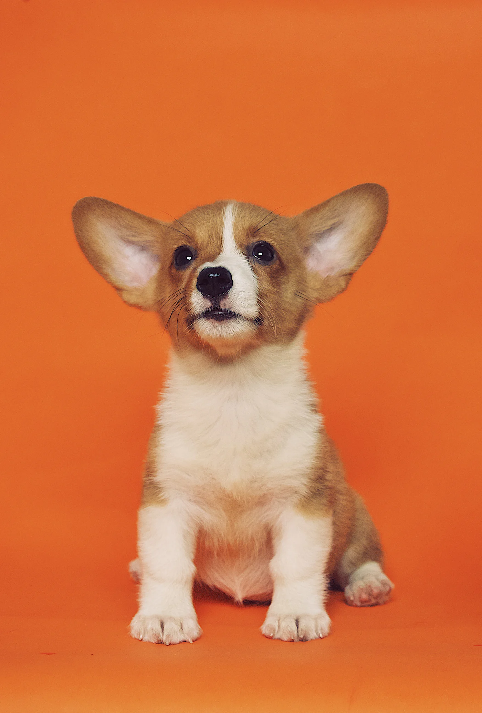
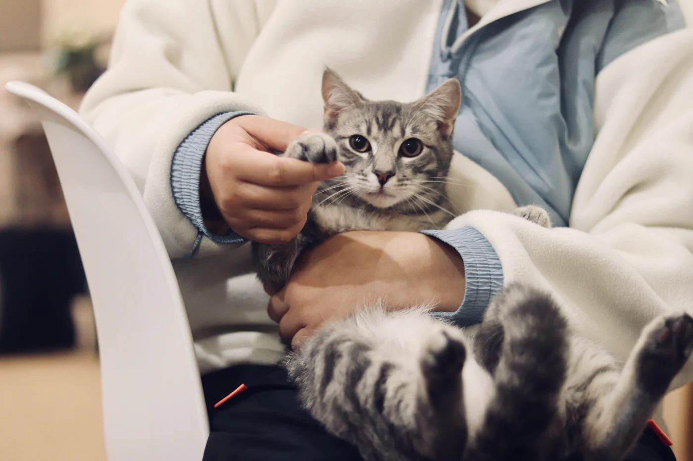
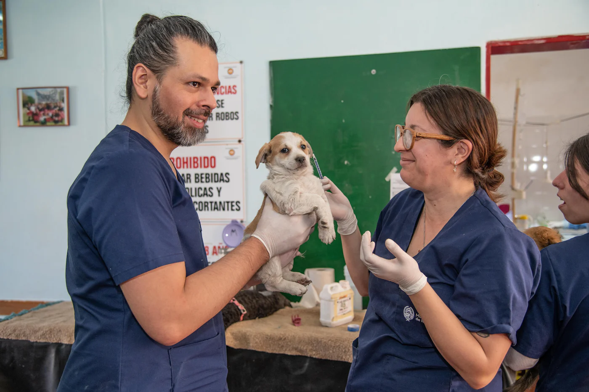
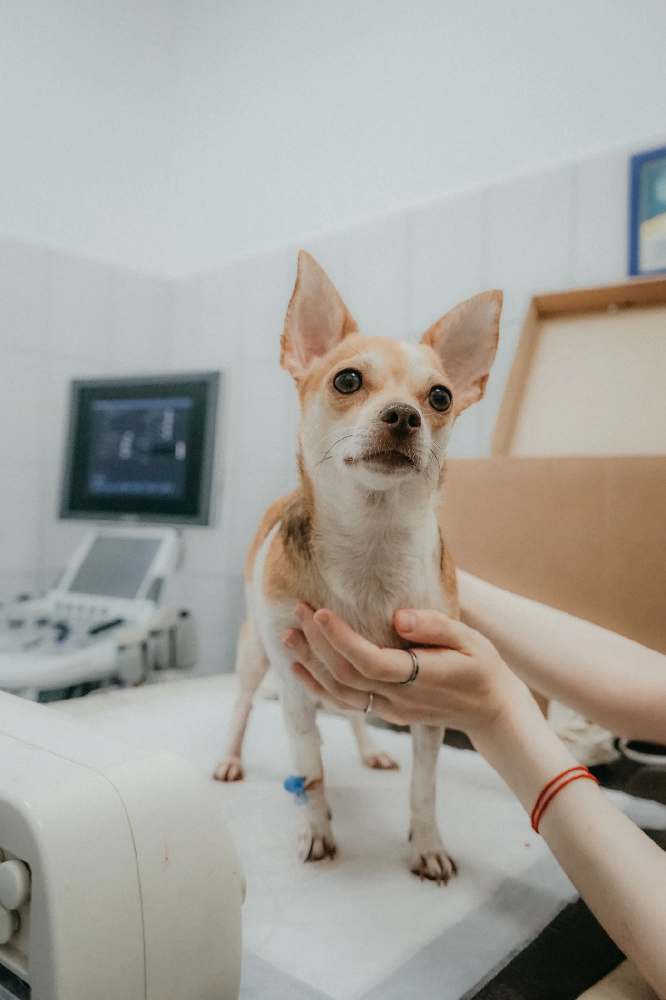
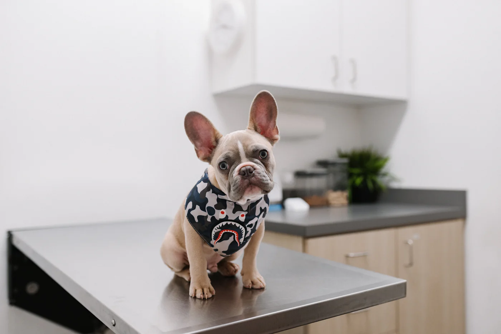

Mikor kell a következő oltás?
Adja meg, mikor született a kölyök, és összerakjuk az oltási naptárát. A kötelezőket kiemeljük, és ha kéri, SMS-ben szólunk előtte.
Kiszámolom

Oltási naptár
Tájékoztató naptár. A pontos sorrendet és időzítést az első vizsgálaton az állatorvos dönti el.
Gyakori ügyek
- Oltása vizsgálattal együtt7 500 Ft-tól
- Mikrochipbeültetés és regisztráció6 000 Ft
- Ivartalanításmacska, kutya, egynapos28 000 Ft-tól
- Fogkő-eltávolításaltatásban, ultrahanggal22 000 Ft-tól

Sürgős esetben
Rendelési időn kívül ügyeletet tartunk. Mérgezés, baleset, nehéz légzés esetén ne várjon: hívjon, és mondjuk, merre induljon.
Ügyelet: 06 30 555 0559

Mancs Állatorvosi Rendelő
Debrecen, Piac utca 40., parkolás az udvarban